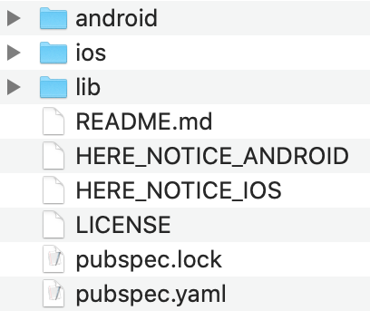

Integrate the HERE SDK
In this tutorial, we will develop a Flutter application that displays a map.
- If you want to integrate the HERE SDK into an existing application, you can skip the initial steps where we set up a new project from scratch.
- If you prefer to start by running an example app that demonstrates some of the features of the HERE SDK, take a look at this tutorial.
Prerequisites
Make sure you have access to your credentials and the HERE SDK framework. To learn more, see Get the HERE SDK package.
Create a new project
If you are new to Flutter, please follow the guides on flutter.dev to help you get started with the first steps.
Note
The resulting code is available from GitHub.
You don't need any advanced Flutter or Android or iOS experience to follow this step-by-step instruction.
For this guide, we have used Android Studio version Android Studio Jellyfish | 2023.3.1 Patch 1 and Xcode version 14.2. In addition, we have used:
- Flutter 3.22.3
- Dart 3.4.4
Note that all example apps have been also tested with Flutter 3.24.1 and Dart 3.5.1.
Newer versions may also work, but are not guaranteed to work. It is recommended to use the Dart version that is bundled with Flutter.
Note
This guide does not cover changes that might be needed when you are migrating your app from a Flutter version that is older than the minimum supported Flutter version 3.22.3. All example apps in this guide are compliant with the Flutter V2 plugin architecture. By default, new app projects created with Android Studio are already ready for V2 plugins when Flutter version 1.12 or higher is used.
To create a new HERE SDK for Flutter project:
First, create a new Flutter project, we have called it "hello_map". Make sure you can run your new Flutter project on an Android and iOS device of your choice to make sure that your Flutter SDK is configured correctly. If it does not work, please refer to the Flutter documentation.
Note
If you don't want to support both platforms, you can skip the steps for either iOS or Android. Note that the HERE SDK for Flutter does not support web and desktop apps.
Integrate the HERE SDK Flutter plugin
As soon as you have verified that everything is set up correctly, it's time to integrate the HERE SDK for Flutter.
Note
Note that the HERE SDK is only available as a separate download. Artifactory support via Maven / Gradle, CocoaPods or pub.dev is not yet available. We plan to add SDK Dependency Management for a future release.
Unzip the downloaded HERE SDK for Flutter package. This package contains various files including this documentation:
- A license file.
- The Developer Guide.
- The API Reference.
- The changelog.
- A TAR file containing the HERE SDK for Flutter plugin. The file is named like this:
here_sdk-<edition>-<version>.release.tar.gz.
Unzip the TAR file, then rename the folder to here_sdk. The content of the plugin folder looks similar like below:

Now create a plugins folder inside your project and copy the renamed plugin folder to this new folder. With this, the content of the plugin folder is contained in hello_map/plugins/here_sdk.
Open the pubspec.yaml file of your Flutter project and add the path from above to the dependencies section. If you are not sure where to add this, it should look as follows:
dependencies:
flutter:
sdk: flutter
cupertino_icons: ^0.1.3
# The following adds the HERE SDK for Flutter plugin folder to your application.
here_sdk:
path: plugins/here_sdk
Of course, if you want, you can rename the plugin folder and adjust the path.
If the path is specified correctly, you can execute flutter pub get from your terminal and the HERE SDK should appear in your project tree. For example, if you are using Android Studio, it will appear under External Libraries -> Flutter Plugins.
After you have executed flutter pub get (or clicked the respective "Pub get" button in Android Studio or any other IDE), a new Podfile is created for iOS. Open hello_map/ios/Podfile and set the platform to the minimum supported iOS version.
Uncomment this line to define a global platform for your project:
platform :ios, '15.0'
Then open hello_map/ios/Runner.xcodeproj with Xcode and set the deployment target to the same iOS version (via Xcode: General -> Deployment Info -> Target). This step is needed if you want to build your app later on with flutter build ios from the terminal for release.
Now, adjust the minimum supported Android SDK version. Open /hello_map/android/app/build.gradle to change the minSdkVersion to:
minSdkVersion 24
Initialize the HERE SDK
The HERE SDK is not initialized automatically. Instead, you can freely decide at which point in time the HERE SDK should be initialized. Initialization happens synchronously on the main thread and takes around 100 ms.
Note
Initialization of the HERE SDK will be successful even if your credentials are invalid. The best way to check if your credentials are valid is to try a feature engine. Invalid credentials will result in a dedicated error enum value. Note that certain features may require more rights than others. For example, the credentials obtained for the Explore Edition will result in an error when being used with the OfflineSearchEngine - which is not part of the subset of the Explore Edition.
Initialize the HERE SDK by executing the following method before you want to use any feature of the HERE SDK:
void _initializeHERESDK() async {
// Needs to be called before accessing SDKOptions to load necessary libraries.
SdkContext.init(IsolateOrigin.main);
// Set your credentials for the HERE SDK.
String accessKeyId = "YOUR_ACCESS_KEY_ID";
String accessKeySecret = "YOUR_ACCESS_KEY_SECRET";
AuthenticationMode authenticationMode =
AuthenticationMode.withKeySecret(accessKeyId, accessKeySecret);
SDKOptions sdkOptions = SDKOptions.withAuthenticationMode(authenticationMode);
try {
await SDKNativeEngine.makeSharedInstance(sdkOptions);
} on InstantiationException {
throw Exception("Failed to initialize the HERE SDK.");
}
}
Make sure to insert correct credentials for key and secret. By calling makeSharedInstance() you initialize all what is needed to use the HERE SDK. The core class of the HERE SDK is called SDKNativeEngine. Under the hood, this instance is used by any other engine that is offered by the HERE SDK.
The HERE SDK requires initialization of its native libraries via SdkContext, which should happen before your app widget is started.
Below we show an example how to call initializeHERESDK() in the main() method of a widget - before accessing the MapView from your layout. Always call initializeHERESDK() on the main isolate.
void main() async {
// Usually, you need to initialize the HERE SDK only once during the lifetime of an application.
_initializeHERESDK();
runApp(MyApp());
}
Similarly to initializeHERESDK(), you can also free resources by disposing the HERE SDK:
void dispose() {
_disposeHERESDK();
super.dispose();
}
void _disposeHERESDK() async {
// Free HERE SDK resources before the application shuts down.
await SDKNativeEngine.sharedInstance?.dispose();
SdkContext.release();
_appLifecycleListener.dispose();
}
In the Engines section you can find more ways to initialize the HERE SDK.
Add a map view
Below you can see how to show a HERE map view. Remove all the code from your main.dart file and replace it with the following:
import 'package:flutter/material.dart';
import 'package:here_sdk/core.dart';
import 'package:here_sdk/core.engine.dart';
import 'package:here_sdk/core.errors.dart';
import 'package:here_sdk/mapview.dart';
void main() async {
// Usually, you need to initialize the HERE SDK only once during the lifetime of an application.
_initializeHERESDK();
runApp(MyApp());
}
void _initializeHERESDK() async {
// Needs to be called before accessing SDKOptions to load necessary libraries.
SdkContext.init(IsolateOrigin.main);
// Set your credentials for the HERE SDK.
String accessKeyId = "YOUR_ACCESS_KEY_ID";
String accessKeySecret = "YOUR_ACCESS_KEY_SECRET";
AuthenticationMode authenticationMode =
AuthenticationMode.withKeySecret(accessKeyId, accessKeySecret);
SDKOptions sdkOptions = SDKOptions.withAuthenticationMode(authenticationMode);
try {
await SDKNativeEngine.makeSharedInstance(sdkOptions);
} on InstantiationException {
throw Exception("Failed to initialize the HERE SDK.");
}
}
class MyApp extends StatefulWidget {
_MyAppState createState() => _MyAppState();
}
class _MyAppState extends State<MyApp> {
late final AppLifecycleListener _appLifecycleListener;
Widget build(BuildContext context) {
return MaterialApp(
title: 'HERE SDK for Flutter - Hello Map!',
home: HereMap(onMapCreated: _onMapCreated),
);
}
void _onMapCreated(HereMapController hereMapController) {
// The camera can be configured before or after a scene is loaded.
const double distanceToEarthInMeters = 8000;
MapMeasure mapMeasureZoom = MapMeasure(MapMeasureKind.distance, distanceToEarthInMeters);
hereMapController.camera.lookAtPointWithMeasure(GeoCoordinates(52.530932, 13.384915), mapMeasureZoom);
// Load the map scene using a map scheme to render the map with.
hereMapController.mapScene.loadSceneForMapScheme(MapScheme.normalDay, (MapError? error) {
if (error != null) {
print('Map scene not loaded. MapError: ${error.toString()}');
}
});
}
void initState() {
super.initState();
_listener = AppLifecycleListener(
onDetach: () =>
// Sometimes Flutter may not reliably call dispose(),
// therefore it is recommended to dispose the HERE SDK
// also when the AppLifecycleListener is detached.
// See more details: https://github.com/flutter/flutter/issues/40940
{ print('AppLifecycleListener detached.'), _disposeHERESDK() },
);
}
void dispose() {
_disposeHERESDK();
super.dispose();
}
void _disposeHERESDK() async {
// Free HERE SDK resources before the application shuts down.
await SDKNativeEngine.sharedInstance?.dispose();
SdkContext.release();
_appLifecycleListener.dispose();
}
}
Note
Null safety is supported by default. It can be optionally disabled, by adding the following comment on top of any Dart file: // @dart=2.9.
Since the HereMap is already implemented as a stateful widget, you can set it directly as the home for your app. The private _onMapCreated callback notifies us when the HereMapController instance is created. The HereMapController allows you to interact with the map.
Note
Note that multiple MapView instances can be created and rendered on the same screen.
Before you can see any vector tiles on the map, we must load a map scheme. Here we load MapScheme.normalDay. As an exercise, you can try to replace the above map scheme with the following: MapScheme.satellite. What do you get? Try out also other map schemes, like the normal night scheme.
The view onto the map can be defined via the camera object. In the example above we show a location in Berlin, Germany.
Handle the lifetime
In addition, it is recommended to free resources when leaving the app by calling SDKNativeEngine.sharedInstance?.dispose() and SdkContext.release(). The SDKNativeEngine is implicitly created and set when the HERE SDK is automatically initialized. This can be done in the overridden dispose() method of a stateful widget. More information on initialization can be found here.
Note that when an app is shutting down anyways, then it is not mandatory to dispose of the SDKNativeEngine, but it doesn't do harm to do it and it is considered good practice to cancel ongoing requests and shut down the HERE SDK services. On the other hand, be careful to not dispose the HERE SDK too early when only one of your widgets is destroyed and other parts of your app still need the HERE SDK. In general, it is also possible to init / dispose the HERE SDK for each widget individually.
Run your app
Now, it's time to build and run the app. Attach a device or start an emulator or simulator and execute flutter run from the app's directory - or run the app from within your IDE. If all goes well, you should see a HERE map covering the screen.

Next steps
- Learn how to integrate the HERE SDK in a new project. See Integrate the HERE SDK.
- Learn more about the features of the HERE SDK. See the Feature list topic.